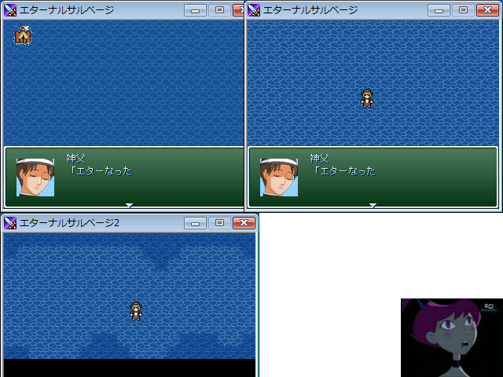

 |
| ◇DL(2.01MB)◇ ◇感想◇ |
| 術者名◇◆9n187RZS9w |
| 魔具◇2000 |
| コメント◇ Ver1 「もしも二万四千年すぎても」に影響を受けた驚異的なクソゲー Ver2 エターナルの海をそのまま使うというコンセプトのデフォ戦ゲー Ver3 素材集めてなんやかんやするゲームらしいが即効でエターなった 「ストラテジーとかディフェンスとか」より前にｔｋってエターなったプロジェクト 3回のエターを乗り越え4度目の正直となる今回 タイトルにエターナルが入ってるとエターなるというジンクスを覆せるか！ |
| マスターから◇ そういうジンクスあるならもっと早く報告して欲しかった。と、経験者は語る。 |